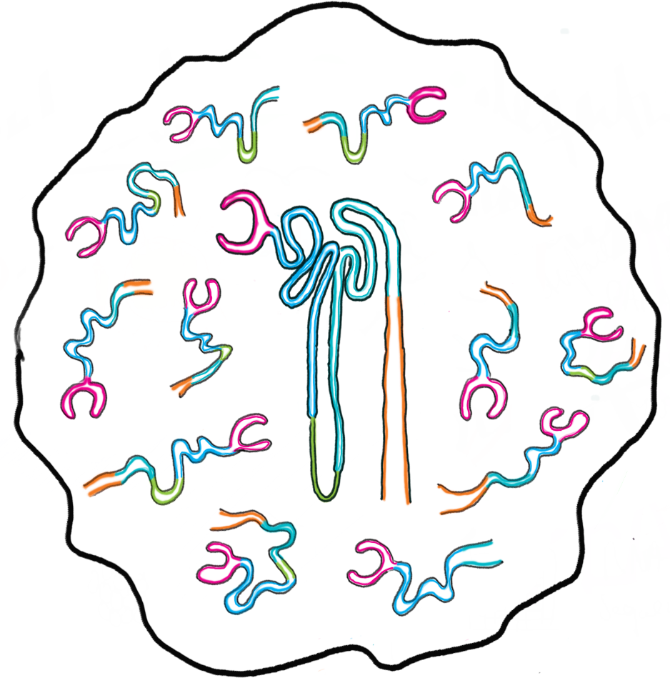

Last updated: 2019-03-20
workflowr checks: (Click a bullet for more information) ✔ R Markdown file: up-to-date
Great! Since the R Markdown file has been committed to the Git repository, you know the exact version of the code that produced these results.
✔ Environment: empty
Great job! The global environment was empty. Objects defined in the global environment can affect the analysis in your R Markdown file in unknown ways. For reproduciblity it’s best to always run the code in an empty environment.
✔ Seed:
set.seed(20190110)
The command set.seed(20190110) was run prior to running the code in the R Markdown file. Setting a seed ensures that any results that rely on randomness, e.g. subsampling or permutations, are reproducible.
✔ Session information: recorded
Great job! Recording the operating system, R version, and package versions is critical for reproducibility.
✔ Repository version: 20bd9c5
wflow_publish or wflow_git_commit). workflowr only checks the R Markdown file, but you know if there are other scripts or data files that it depends on. Below is the status of the Git repository when the results were generated:
Ignored files:
Ignored: .DS_Store
Ignored: .Rhistory
Ignored: .Rproj.user/
Ignored: ._.DS_Store
Ignored: analysis/cache/
Ignored: build-logs/
Ignored: data/
Ignored: output/.DS_Store
Ignored: output/._.DS_Store
Ignored: output/03-clustering/selected_genes.csv.zip
Ignored: output/04-marker-genes/de_genes.csv.zip
Ignored: packrat/.DS_Store
Ignored: packrat/._.DS_Store
Ignored: packrat/lib-R/
Ignored: packrat/lib-ext/
Ignored: packrat/lib/
Ignored: packrat/src/
Untracked files:
Untracked: DGEList.Rds
Untracked: scripts/build.pbs
| File | Version | Author | Date | Message |
|---|---|---|---|---|
| Rmd | 20bd9c5 | Luke Zappia | 2019-03-20 | Tidy up website |
| html | 2693e97 | Luke Zappia | 2019-03-05 | Add methods page |
| Rmd | 34eb216 | Luke Zappia | 2019-02-12 | Add velocyto |
| html | 34eb216 | Luke Zappia | 2019-02-12 | Add velocyto |
| Rmd | 8f826ef | Luke Zappia | 2019-02-08 | Rebuild site and tidy |
| html | 8f826ef | Luke Zappia | 2019-02-08 | Rebuild site and tidy |
| Rmd | 2daa7f2 | Luke Zappia | 2019-01-25 | Improve output and rebuild |
| html | 2daa7f2 | Luke Zappia | 2019-01-25 | Improve output and rebuild |
| html | fb2eb66 | Luke Zappia | 2019-01-10 | Tidy workflowr and packrat setup |
| Rmd | 8b1bef9 | Luke Zappia | 2019-01-10 | Start workflowr project. |

This website displays the analysis code and results for the analysis chapter of my PhD thesis. In this chapter I reanalyse a previously published kidney organoid scRNA-seq dataset (Phipson et al. 2019; Combes et al. 2019), focusing on the decisions that are made during analysis and demonstrating a range of tools that can be used for various tasks.
Follow the links below to access the different stages of analysis or refer to the Getting started page for more details about the dataset and how to reproduce the analysis.
Methods - Description of methods used during the analysis.
This website and the analysis code can be cited as:
Zappia, Luke. PhD thesis analysis. 2019. DOI:
This data files associated with this analysis can be cited as:
Zappia L. PhD thesis analysis data. University of Melbourne. 2019. DOI: 10.26188/5c9182aa7e23d
If you use this data in an analysis please cite the publcations that originally described it.
Combes, Alexander N, Luke Zappia, Pei Xuan Er, Alicia Oshlack, and Melissa H Little. 2019. “Single-cell analysis reveals congruence between kidney organoids and human fetal kidney.” Genome Med. 11 (1): 3. doi:10.1186/s13073-019-0615-0.
Phipson, Belinda, Pei X Er, Alexander N Combes, Thomas A Forbes, Sara E Howden, Luke Zappia, Hsan-Jan Yen, et al. 2019. “Evaluation of variability in human kidney organoids.” Nat. Methods 16 (1): 79–87. doi:10.1038/s41592-018-0253-2.
devtools::session_info()This reproducible R Markdown analysis was created with workflowr 1.1.1